Resumen
El presente análisis de diversidad alfa y beta se realiza con los datos obtenidos de abundancia para 22 especies de escarabajos coprófagos, colectados en seis (6) localidades del Departamento del Magdalena. En este sentido, el enfoque de este análisis consiste en evaluar los patrones de diversidad (alfa y beta). Para el caso alfa (diversidad local), se utiliza las propuestas de Withaker (1960) y de Chao et al. (2024), representados por la diversidad alfa clásica y la que se valora en cuatro pasos, respectiamente. La diversidad beta (entre localidades) se enfoca en la comparación de las propuestas de Podani (2011) y de Baselga (2010). A partir de esto se obtuvieron los siguientes resultados:
- La diversidad alfa no supera a las 18 especies (Localidad 6), con el menor valor de 9 especies (Table 4).
Las localidades 4 a 6 son las de mayor proporción de especies abundantes o dominantes, correspondientes al paisaje de lomeríos (Figure 2 y Figure 3).
Tanto el paisaje de montañas como el de lomeríos presentan una buena (> 0.9) y solo dos especies sin detectar (paisaje de montañas) (Table 7 y ?@tbl-tbl8). La mayor riqueza se concentra en el paisaje de lomeríos (Figure 4 y Figure 5).
- La diversidad gamma fue de 22 especies con un estimado o esperado de máximo 24 especies, según el estimador Jack1 (?@tbl-tbl11).
- La diversidad beta total, con datos de abundancia fue de 0.48, con una mayor contribución (LCBD) en las localidades del paisaje de lomeríos (L4, L5 y L6) (Figure 6) y de las especies C. aequinoctialis, C. aequinoctialis, C. lituratus, C. septemmaculatus, C. variabilis, E. impressicollis, O. hirculus y U. deavilai.
- La diversidad beta total, con datos binarios fue casi la mitad con la familia Podani (?@tbl-tbl10), comparado a la Familia Baselga (?@tbl-tbl11). El mayor aporte para los dos casos lo define el componente de reemplazo o de recambio de especies (Reemp y beta.SIM, respectivamente).
- La diversidad beta para las localidades de montaña (zona Norte) y las localidades de lomeríos (zona Sur), con datos binarios presentó un patron inverso entre la familia de Podani y la de Baselga (Table 3 y ?@tbl-tbl14). según Podani se registraron valores de diversidad beta de sorensen de 0.25 y 0.22 para los paisajes de montañas y de lomeríos, respectivamente (?@tbl-tbl13). Para el caso de Baselga, se registraron datos de 0.35 y de 0.41 para los paisajes de montañas y de lomeríos, respectivamente (?@tbl-tbl14). Es probable que el patrón más acorde con el contexto de los lugares sea el encontrado con la propuesta de Baselga, debido a que en el paisaje de lomeríos o en el Sur, se presentaron mejores condiciones de los parches, con mayor diversidad alfa y beta total. La ?@tbl-tbl15 resume los datos de diversidad beta total y por tipos de paisaje.
- La diversidad beta para pares de localidades, con datos binarios presentó
Introducción
Whittaker (1960) fue el primero en definir los términos de diversidades alfa, beta y gamma. Definió a la diversidad alfa, como la diversidad local, a la diversidad gamma como la diversidad regional y la diversidad beta como la relación entre las anteriores, orientada a el cambio o la variación en la composición de las especies en los ensamblajes o las comunidades. Esta diversidad beta también puede brindar información sobre la variedad de lugares o de nichos que se pueden presentar en cada localidad (cuando hay diferencias en la diversidad alfa entre localidades). Las diversidad alfa y gamma son relativas al tamaño de la escala espacial o temporal que se utilice (alfa y gamma por ej. pueden ser desde un bosque hasta un departamento).
De acuerdo a Whittaker (1960), surgen dos enfoques orientados a las diferencias entre las comunidades evaluadas con la diversidad beta: (1) Un recambio, es decir, el cambio direccional en la composición de de especies a lo largo de un gradiente espacial, temporal o ambiental predefinido. (2) La variación en la composición de especies entre unidades de muestreo, sin referencia a un gradiente explícito (cambio especies o anidamiento).
Baselga y Gómez-Rodríguez (2019), coinciden con la propuesta de Whittaker, debido a que las diferencias entre las comunidades pueden generarse por (1) el recambio, reemplazamiento o sustitución de unas especies por otras (turnover o replacement) y por el (2) anidamiento o nestedness, asociado a la perdida de especies de una comunidad más diversa a otra menos diversa.
Harrison et al. (1992), Williams (1996), Lennon et al. (2001), Podani (2011) y Legendre (2014) coinciden con la propuesta de Whittaker, enfocando a las diferencias entre comunidades (diversidad beta) por dos procesos principales: (1) el recambio de especies (a veces llamado rotación) y (2) la diferencia de riqueza (ganancia y pérdida de especies, o su caso especial, anidamiento). En este orden de ideas, a continuación se describen aspectos asociados a los atributos de la diversidad beta o de diferencias entre comunidades.
El reemplazo o recambio de especies es lo que se observa a lo largo de gradientes ecológicos, en donde algunas especies se encuentran restringidas en un rango limitado del gradiente de acuerdo con su tolerancia y óptimos ecológicos. Algunas especies se observan en un extremo del gradiente, luego desaparecen y son reemplazadas por otras, y así sucesivamente. Las causas de estos patrones incluyen forzamientos ambientales, pero también, potencialmente, competencia y eventos históricos (es decir, perturbaciones y otros procesos que ocurrieron en el pasado y dejaron sus marcas en las comunidades). La configuración de los hábitats, como la presencia de bordes o ecotonos o las presiones antrópicas que modifican el paisaje, pueden repercutir en los procesos de reemplazamiento de especies (Filgeras et al. 2016).
La diferencia de riqueza se refiere al hecho de que puedan existir diferencias en el número de especies entre comunidades. Esto puede ser causado por desapariciones de especies locales, tambien por diferencias en las condiciones abióticas locales que conducen a diferentes números de nichos u otros procesos ecológicos que llevan a las comunidades a un mayor o menor número de especies. En caso de que la diferencia de la riqueza aumente, puede estar directamente relacionado con la riqueza de nichos disponibles, o con procesos de anidamiento cuando hay perdida de especies en algunos lugares.
El anidamiento es un caso especial de diferencia de riqueza donde las especies en sitios más pobres son un subconjunto estricto de las especies presentes en sitios más ricos.
Los índices de (1) reemplazo, de (2) diferencia de riqueza y de (3) anidamiento no son índices de diversidad beta; pero descomponen coeficientes de disimilitud que pueden usarse para estimar la diversidad beta.
Legendre (2014) propone un marco algebraico unificador para comparar las fórmulas publicadas de los tres componentes anteriores, definiendo a dos familias de índices, a las que denominó familias de Podani y de Baselga respectivamente, en honor a los nombres de los autores que abordaron estos índices. En la familia de Podani, el índice de diferencia de riqueza representa solo una parte del anidamiento, debido a que no incluye a especies comunes.
La familia de Baselga, define a un índice de reemplazo o recambio comparable a los de Podani. El anidamiento de Baselga es comparable al anidamiento relativizado de Podani y Schmera (2011). Según Legendre (2014), los índices de reemplazo y de diferencia de riqueza de la familia Podani son fáciles de interpretar en términos ecológicos, así como los índices de reemplazo en la familia Baselga. Los índices de anidamiento de Baselga son menos obvios, causando algunas controversias a la hora de analizarlos. Baselga (2010) denomina al indice de reemplazo como “recambio” o “rotación”, basado en la similitud de Sorensen o de sorensen y al restarlo con este índice de sorensen, se determina al componente de anidamiento.
Si a representa a las especies en común, b a las especies presentes en un sitio A y ausentes en un sitio B en comparación, c representa lo opuesto a b, Segun Borcard et al. (2018), Podani y Baselga coinciden en el hecho de que (1) el anidamiento sólo es posible cuando hay especies en común (a > 0), (2) el valor máximo se alcanza cuando b o c es cero. (3) El anidamiento aumenta cuando c aumenta. (4) Podani considera que las especies comunes a contribuyen directamente al anidamiento, al contrario al anidamiento de Baselga. En consecuencia, cuando b = c = 0 (no hay especies exclusivas de uno de los dos sitios comparados), Podani alcanza el valor de anidamiento máximo de 1 y Baselga de cero. (5) La contribución de a al anidamiento es clara en el índice de Podani, pero confusa y no monótona en Baselga. (6) El anidamiento de Podani tiene un límite superior fijo y alcanzable de 1; el valor máximo de Baselga cambia para cada par de sitios.
Objetivos
El objetivo de este análisis de diversidad beta para el ensamblaje de coprófagos, se orienta en los siguientes aspectos:
Determinar la diversidad beta general o total. Para conocer la diversidad beta de la escala general.
Con la propuesta de Whittaker (1960), que se realiza con datos de abundancias de las especies. Donde β = S/α¯, donde S es la diversidad gamma y α¯ es la diversidad alfa o promedio de especies entre las n localidades. Con la propuesta de Legendre (2014), se calcula la diversidad beta (BDtotal), la contribución de las localidades (LCBD) y de las especies (SCBD) a esta diversidad.
La propuesta de Baselga (2010) es con datos binarios y se utilizará para medir la diversidad beta general (βSOR), el nivel de recambio (βSIM) y el nivel de anidamiento (βSNE).
Identificar la diversidad beta espacial (paisajes de montañas y de lomeríos). Se realiza una zonificación de las localidades de acuerdo a su ubicación espacial, para comparar si hay diferencias en los elementos de la diversidad beta, entre las localidades ubicadas en los paisajes de montañas y de lomeríos del departamento.
- Con la propuesta de Podani (2011) se determinará el reemplazo (ReplLCBD) y la diferencia de riqueza (RichDiffLCBD). Permitiendo mapear el patrón espacial, probando la hipótesis de distribución aleatoria de las especies entre las localidades, mediante permutaciones.
Comparar la diversidad beta entre parejas de localidades. Orientado a evaluar el posible efecto de gradientes ambientales que ocasionen patrones de (1) reemplazamiento o de recambio entre localidades cercanas o las distantes, así como (2) cambios en los valores de riqueza debido a la posible diversidad de nichos disponibles en las localidades o por (3) procesos de anidamiento, bajo la premisa de que las localidades más estructuradas serán las que presenten mayor riqueza y patrones de anidamiento (Baselga et al. 2010).

1. Cargar las librerías
Se requiere cargar las librerías para el análisis de diversidad alfa, gamma y beta, por descomposición de las escalas alfa y gamma.
2. Cargar la base de datos
2.1 Datos de abundancia. Como el análisis de diversidad beta se realizará con datos de abundancia y de presencia-ausencia, inicialmente se requiere cargar la base de datos con valores de abundancia.
2.2 Datos de binarios. Se requiere transformar los datos a un formato binario o de presencia-ausencia, con el paquete caret.
Posteriormente se incorpora la clasificación de los bosques o localidades por dos paisajes de lomerío y de montaña, respectivamente, para evaluar cómo es el recambio y el anidamiento de estos sectores.
3. Diversidades Alfa y Gamma
De acuerdo a la propuesta de Whittaker (1960), el cálculo de la diversidad beta se deriva de las diversidades alfa y gamma, como β = S/α¯, donde S es la diversidad gamma y α¯ es la diversidad alfa o promedio de especies entre las n localidades.
3.1 Diversidades Alfa - Estimadores clásicos
La Table 1 muestra que el mayor número de especies (N0 o diversidad alfa de Whittaker) se presenta en las localidades L6, L4 y L1, respectivamente. La mayor diversidad asociada a taxones abundantes (N1), los muy abundantes o dominantes (N2) se presenta en L2 , L4, esto se refleja en la entropía de Shannon (H y Hb2) y en los valores de equidad de pielou, de Shannon y de Simpson (J, E10 y E20).
| N0 | N1 | N2 | H | Hb2 | N1b2 | J | E10 | E20 | |
|---|---|---|---|---|---|---|---|---|---|
| L1 | 14 | 5.71 | 3.74 | 1.74 | 2.51 | 5.71 | 0.66 | 0.41 | 0.27 |
| L2 | 9 | 6.61 | 5.59 | 1.89 | 2.72 | 6.61 | 0.86 | 0.73 | 0.62 |
| L3 | 10 | 4.79 | 3.92 | 1.57 | 2.26 | 4.79 | 0.68 | 0.48 | 0.39 |
| L4 | 14 | 6.83 | 5.14 | 1.92 | 2.77 | 6.83 | 0.73 | 0.49 | 0.37 |
| L5 | 13 | 2.49 | 1.65 | 0.91 | 1.31 | 2.49 | 0.35 | 0.19 | 0.13 |
| L6 | 18 | 4.60 | 2.83 | 1.53 | 2.20 | 4.60 | 0.53 | 0.26 | 0.16 |
La Figure 1 muestra la relación inversa entre los valores de riqueza o del número de especies de coprófagos (N0), principalmente con los estimadores de equidad o de uniformidad, lo cual puede asociarse a que el aumento de taxones se correlacione con patrones de dominancia. Es así como las localidades más ricas en especies L6, L4 y L1, presentan las especies con mayor dominancia (Table 4). El resto de estimadores de diversidad (N1 y N2), de entropía (H y Hb2), así como de equidad (J, E10 y E20), presentan marcadas relaciones positivas o directas.
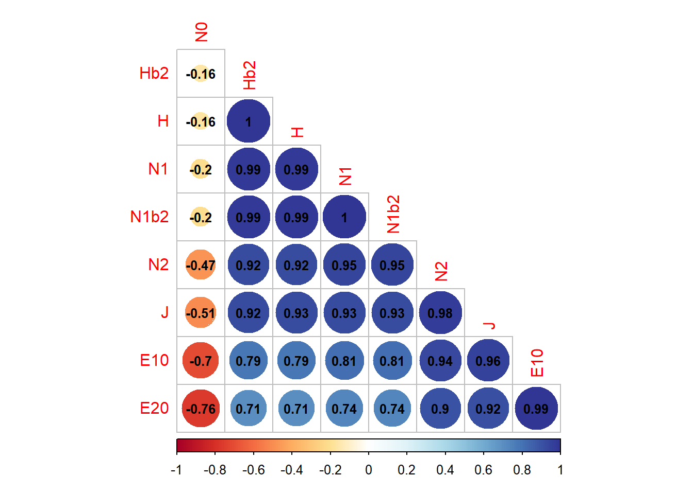
3.2 Diversidades alfa - Curvas RAD (Localidades)
Para propósitos de este documento se realizarán los diagramas con las quince (15) especies de coprófagos más abundantes en las localidades evaluadas. Este diagrama permite hacer una exploración de los patrones de abundancia de los principales taxones de las muestras en comparación, como complemento a los modelos paraétricos a realizar.
Se filtran los datos de abundancia por cada paisaje de montañas y de lomeríos. Posteriormente se inserta una columna de rangos de abundancia y otra columna de abundancia relativa. Finalmente se filtran a los 15 taxones más abundantes, para que las curvas no se saturen.
Se observa que las localidades 4 a 6 (localidades de lomeríos) son las de mayor proporción de especies abundantes o dominantes (Figure 2).
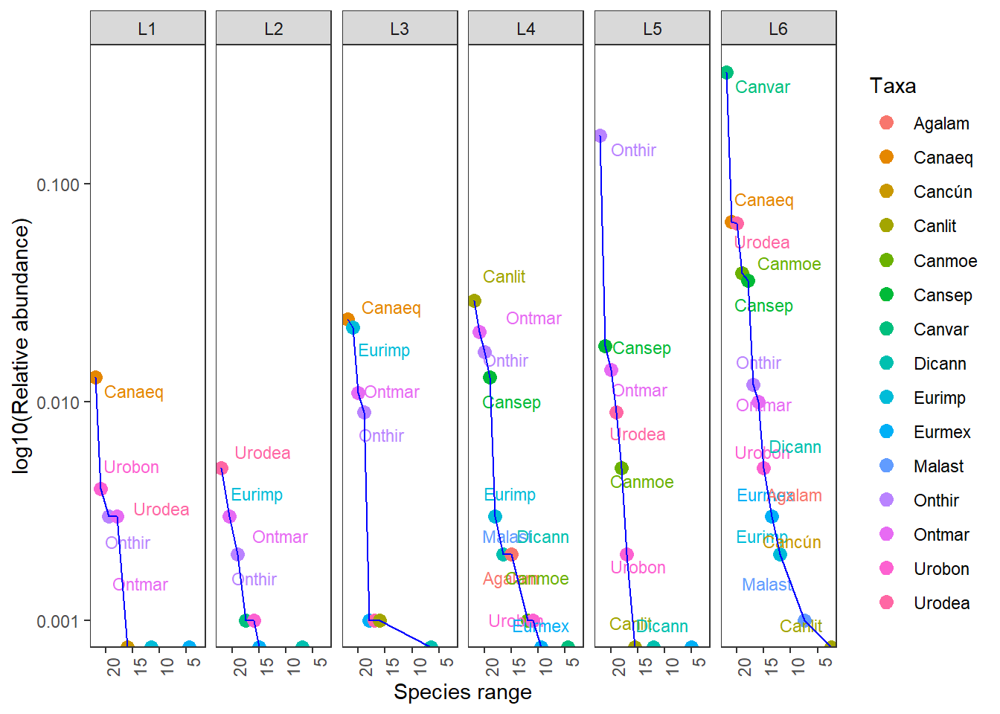
3.3 Diversidades alfa - Curvas RAD (Paisajes)
El paisaje con mayor proporción de taxones dominantes es el de Lomeríos (Figure 3).
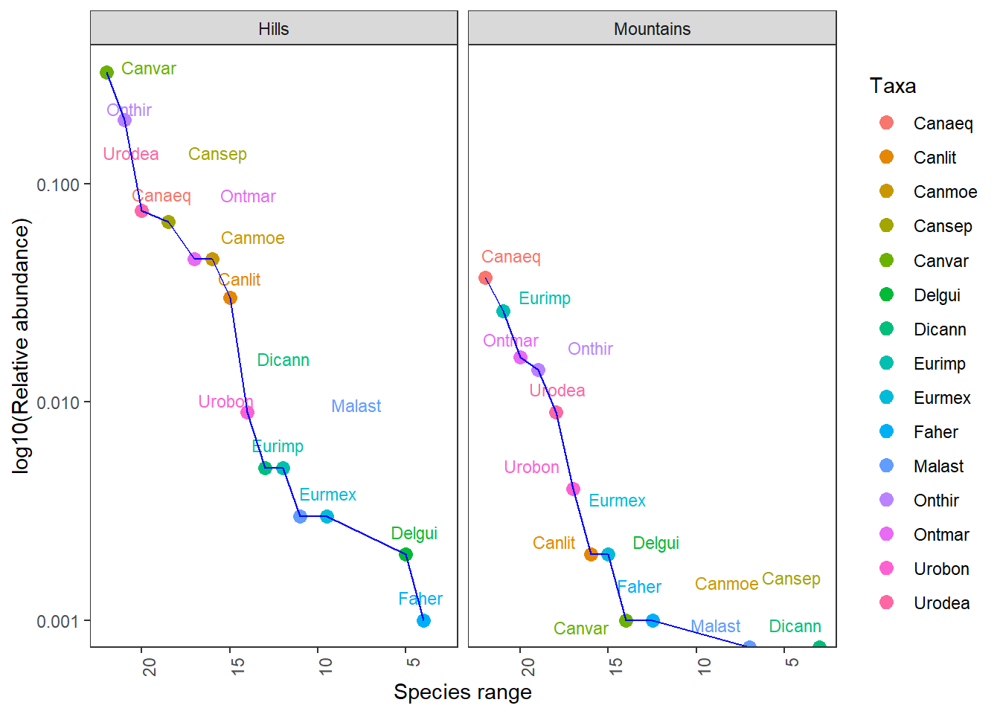
3.4 Valoración de la diversidad alfa en cuatro pasos, según Chao et al. (2020).
Este procedimiento permite calcular los siguientes cuatro pasos o insumos: (1) la completitud o integridad de la muestra, (2) la diversidad asintótica, (3) la diversidad no asintótica y (4) la uniformidad de las abundancias (Chao et al. 2020).
3.4.1 Valoración por tipos de paisajes
Primero se corre el procedimiento, con el comando iNEXT4steps, el cual general los insumos de diversidad en los cuatro pasos propuestos por Chao et al. (2020).
Paso 1. El perfil de completitud indica que las dos muestras (paisajes) son completas en los tres ordenes de diversidad “q” (completitud > 0.9) (Table 2).
| Assemblage | q = 0 | q = 1 | q = 2 |
|---|---|---|---|
| Hills | 1.00 | 1.00 | 1 |
| Mountains | 0.92 | 0.99 | 1 |
–
Paso 2. El perfil asintótico muestra la relación entre la diversidad observada y la estimada, en ese sentido, la diferencia define a la diversidad no detectada (sin.det). Solo en el paisaje de montañas se muetran dos especies sin detectar (Table 3).
| Assemblage | Diversity | Observed | Estimator | s.e. | LCL | UCL | sin.det |
|---|---|---|---|---|---|---|---|
| Hills | Species richness | 21.00 | 21.00 | 0.62 | 21.00 | 22.21 | 0 |
| Hills | Shannon diversity | 7.04 | 7.06 | 0.10 | 6.86 | 7.26 | 0 |
| Hills | Simpson diversity | 4.83 | 4.84 | 0.09 | 4.67 | 5.01 | 0 |
| Mountains | Species richness | 17.00 | 18.50 | 4.56 | 17.00 | 27.43 | 2 |
| Mountains | Shannon diversity | 6.76 | 6.88 | 0.27 | 6.36 | 7.41 | 0 |
| Mountains | Simpson diversity | 5.09 | 5.13 | 0.22 | 4.71 | 5.56 | 0 |
–
Paso 3. El análisis no asintótico, compara a los paisajes con una cobertura similar de 0.999, definiendo al paisaje de lomeríos como la de mayor diversidad, en terminos de la riqueza de taxones (q= 0) (Table 4).
| Cmax = 0.999 | q = 0 | q = 1 | q = 2 |
|---|---|---|---|
| Hills | 20.16 | 7.02 | 4.83 |
| Mountains | 18.29 | 6.84 | 5.11 |
–
Paso 4. El patrón de uniformidad es muy similar entre paisajes (Table 5).
| Pielou J' | q = 1 | q = 2 | |
|---|---|---|---|
| Hills | 0.65 | 0.31 | 0.20 |
| Mountains | 0.66 | 0.34 | 0.24 |
–
La curva de rarefacción y extrapolación, muestra que no hay diferencias entre la diversidad encontrada en cada tipo de paisaje, a pesar que la riqueza es superior en la época de lluvias (Figure 4).
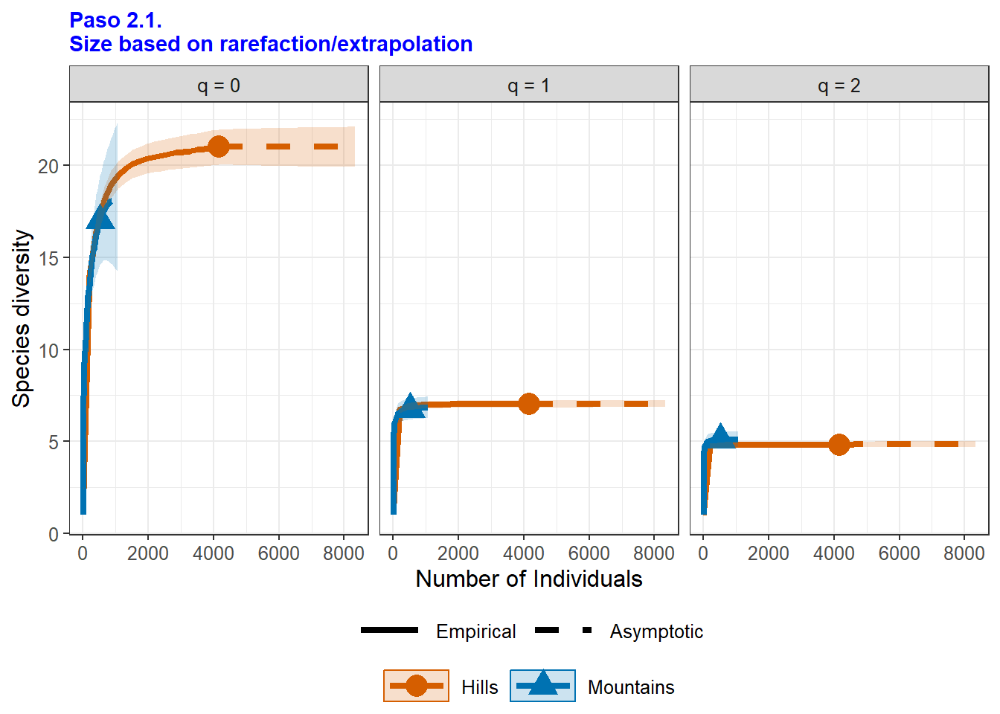
Estas curvas complementan al perfil no asintótico relacionado en la Table 4. Se observa que todas alcanzan la cobertura máxima de 1 (eje x de Figure 5) y que no hay diferencias apreciables entre la diversiad de cada paisaje comparado.
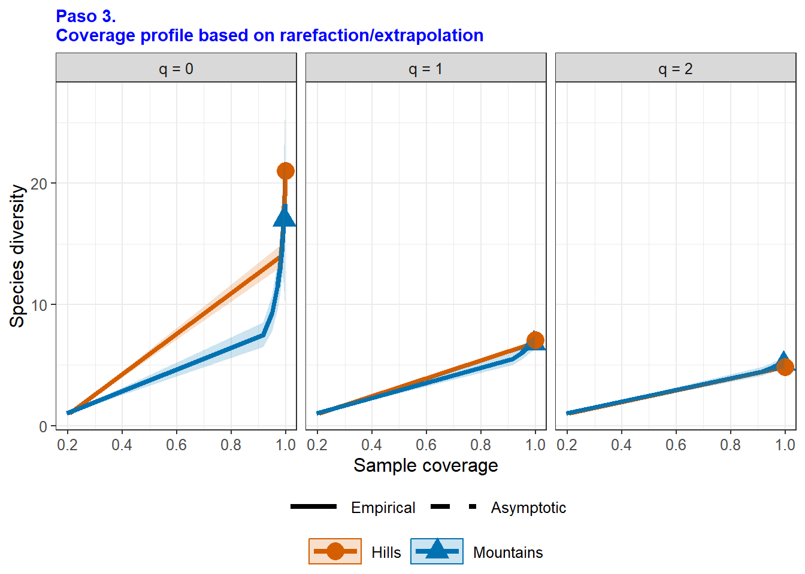
3.5 Diversidades gamma
De acuerdo a Whittaker (1960), la diversidad gamma, corresponde al número total de especies observadas en las localidades evaluadas (gamma.obs), para este trabajo corresponde a un total de 22 especies de coprófagos. La función specpool( ) del paquete vegan realiza la proyección de las especies esperadas (gamma.est), basado en las menos frecuentes (especies observadas en sólo una o dos localiades). De acuerdo a los estimadores de diversidad gamma (chao, jack1 y boot) de la Table 6, muestra que se espera un máximo de 24 especies (2 más que las encontradas en las 6 localidades).
[1] 22| n | Riqueza | chao | ee.chao | jack1 | ee.jack1 | boot | de.boot |
|---|---|---|---|---|---|---|---|
| 6 | 22 | 22.6 | 1.13 | 23.7 | 1.18 | 23.1 | 1.1 |
4. Diversidad Beta General
4.1 La diversidad beta con datos de abundancia según Withaker (1960)
Se utilizará el comando beta.div() del paquete adespatial, se calcula la diversidad beta total (BDtotal) y la suma total de cuadrados de Y (SStotal) que es la suma de los valores al cuadrado en la matriz S (matriz de desviaciones al cuadrado de los valores de abundancia de las especies). Además se obtiene la descomposición de la diversidad beta en LCBD (contribución de las localidades a la diversidad beta) y SCBD (contribución relativa de las especies a la diversidad beta).
SStotal BDtotal
2.3857817 0.4771563 a. Diversidad beta total (BDtotal). Se obtiene un SStotal= 2.38 y un BDtotal= 0.477.
b. Contribución de las especies a la diversidad beta (SCBD). Siete especies tienen un SCBD superior al SCBD medio, representadas por cuatro de las seis especies del género Canthon (Canthon aequinoctialis - C. aequinoctialis - Canaeq, C. lituratus - Canlit, C. septemmaculatus - Cansep, C. variabilis - Canvar, Eurysternus impressicollis - Eurimp, Onthophagus hirculus - Onthir y Uroxys deavilai - Urodea) (Table 7). Las abundancias de estas especies transformadas por Hellinger, varían más entre las localidades, lo que las puede hacer interesantes como indicadores ecológicos.
c. Contribución de las localidades a la diversidad beta (LCBD). Se observa que los mayores valores de LCBD se concentran en el paisaje de lomeríos, representada por las localidades L4, L5 y L6 (LCBD = 0.18, 0.175 y 0.23 respectivamente), que corresponden a los lugares con mayor abundancia de individuos y riqueza de especies (ver N0 en la Table 7), aunque las pruebas permutacionales (p.adjust), no encuentran diferencias significativas entre las localidades (valores p> 0.05), por lo que se puede asumir que no hay diferencias importantes entre las abundancias de las especies para cada localidad.
character(0)La Figure 6 muestra la distribución espacial de los aportes de las seis localidades a la diversidad beta (LCBD), basados en un cálculo de la abundancia de especies transformadas por Hellinger. Los tamaños de los circulos son proporcionales a los valores de LCBD; por lo tanto, las burbujas más grandes corresponden a los sitios que más contribuyen a la diversidad beta general del conjunto de datos. En este sentido, similar al resultado anterior, se observa que las localidades L4, L5 y L6 (Paisaje de lomeríos), son las que más aportan a esta diversidad, orientada al cambio en la composición de especies entre localdiades (Whittaker 1970).
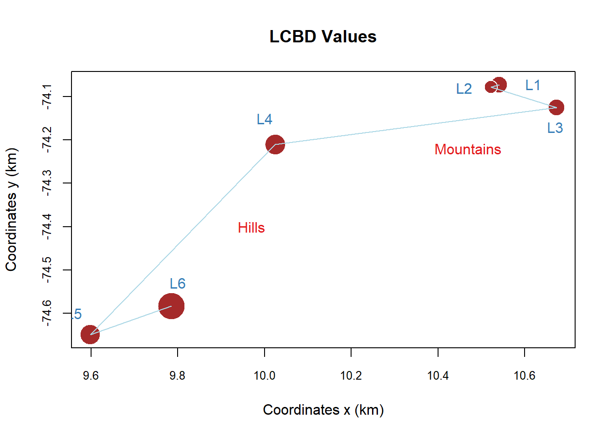
5. Diversidad Beta por paisaje de montañas y de lomeríos (Norte y Sur)
5.1 Resumen: Diversidad beta general vs. entre paisajes con datos binarios (Familia de Baselga 2010)
La Table 7 resume los resultados de ls diversidad beta total o de las seis localidades y de la diversidad beta entre los dos paisajes, mostrando que la diversidad beta entre las seis localidades fue baja (0,56 o del 56%). El paisaje de montañas, presentó el valor más alto de diversidad beta (0.41 o del 41%). Para todos los casos el recambio es el componente de diversidad dominante (Table 7).
Table 7: Beta diversity parameters. (a) Beta diversity by landscape and locality scales. (b) Contribution of species and localities to beta diversity.
| Escale | n | General.beta | Turnover | Nestedness |
|---|---|---|---|---|
| Localities | 6 | 0.56 | 0.43 | 0.13 |
| Muntains | 3 | 0.35 | 0.25 | 0.10 |
| Hills | 3 | 0.41 | 0.27 | 0.13 |
| Contributions | Results |
|---|---|
| SCBD | Urodea (0.073), Canaeq (0.206), Canlit (0.08), Cansep (0.06), Canvar (0,193), Eurimp (0.107), Onthir (0.125) |
| LCBD | L1 (0,14), L2 (0,115), L3 (0,15), L4 (0,18), L5 (0,17), L6 (0,23) |
6. Diversidad beta entre pares de localidades
6.1 Clasificación de localidades según Podani
Los patrones de clasificación de las localidades son similares entre la propuesta de Podani y la de Baselga. Para la proyección de los dendogramas, se utilizará la propuesta de Podani, con el comando beta.div.comp, del paquete adespatial, para calcular la disimilitud de sorensen (o de Sorensen), en componentes de recambio y de diferencia de riqueza (similar al anidamiento de Baselga, pero más amplio) segun Legendre (2014).
En la Figure 7 se observa que el patrón de diversidad beta general es similar al que se presenta en el cambio de riqueza (incluye al anidamiento), con las formación de dos grupos, separando a las localidades L2 y L3, correspondientes al paisaje de montañas.
Hay un cambio de riqueza que incorpora al anidamiento, muy similar entre las localidades 1 y 4 (paisajes de montañas y de lomeríos, respectivamente) (Figure 7 c). Según Baselga et al (2019), si el patrón de anidamiento es el que domina, los lugares con mayor riqueza de especies, son los de mayor interés de conservación, ya que pueden ser los que están surtiendo de especies al resto de lugares por su proceso de anidamiento.Las localidades 1 y 4 (Aracataca y Sabanas de San Ángel) son las de mayor riqueza, despues de la localidad 6 (Sta Barbara de Pinto). Los niveles de recambio de especies fueron menos marcados, registrandose el mayor recambio entre las localidades 3 y 6 (paisajes de montañas y de lomeríos), el menor recambio lo presentó la localidad 5 (Figure 7 b).
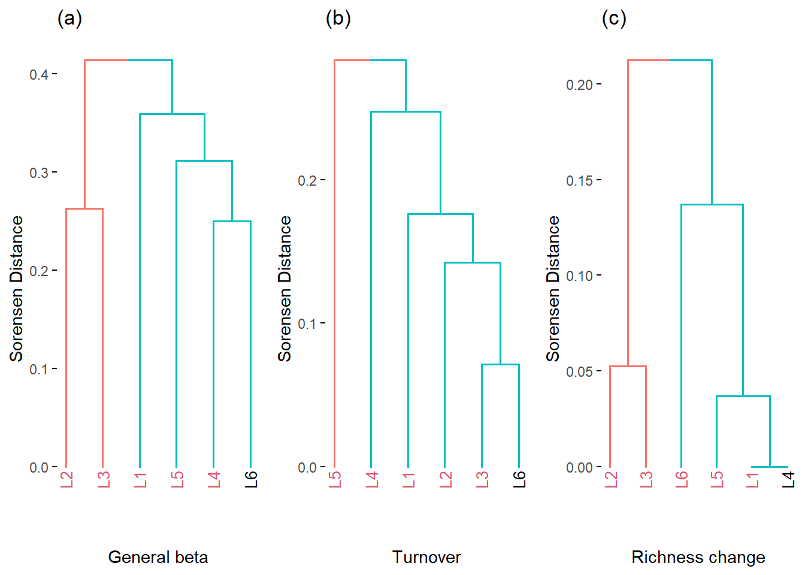
6.2 Comparación de parejas de localidades según Podani
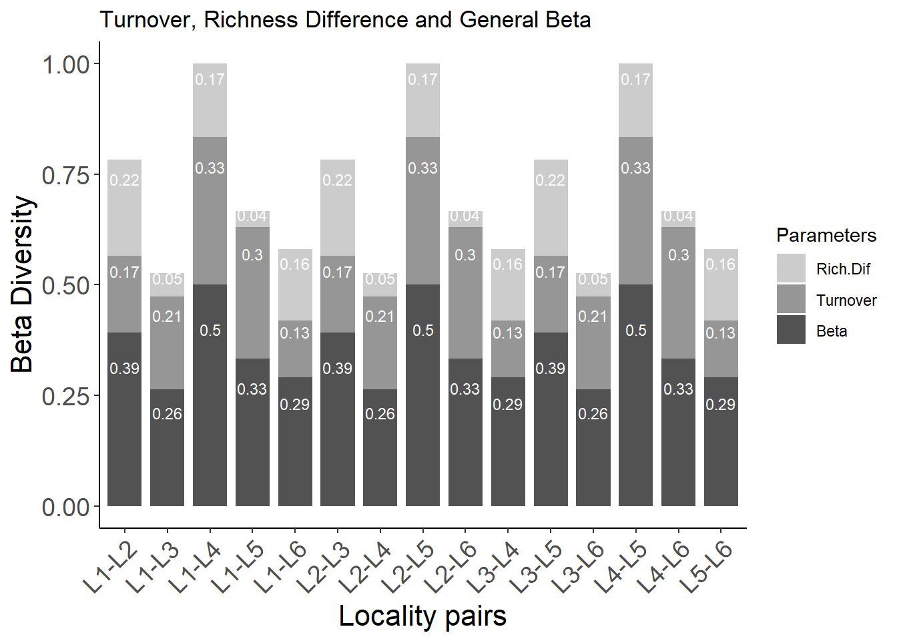
La Figure 8 muestra que el recambio es el que domina en comparación al anidamiento por diferencia de especies, principalmente entre las parejas de localidades L1-L4, L2-L5 y L4-L5. La diversidad por diferencia de riqueza fue menor al recambio, excepto en las parejas L1-L2, L1-L6, L2-L3, L3-L5 y L5-L6.
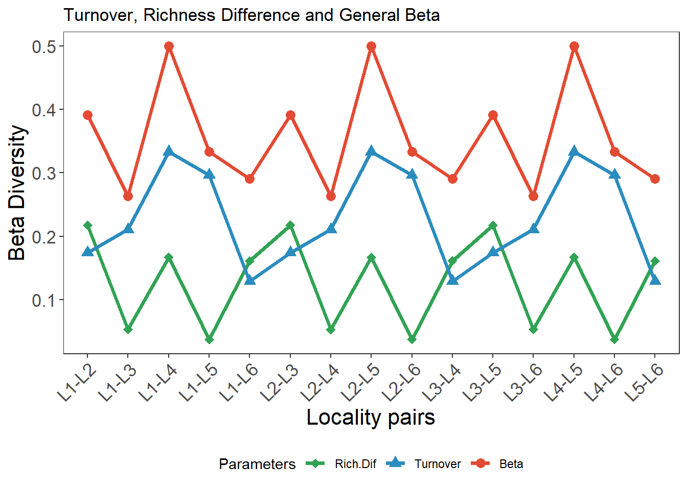
La Figure 9 muestra de una manera más clara que la anterior, que el recambio es el que domina en comparación al anidamiento por diferencia de especies, principalmente entre las parejas de localidades L1-L4, L2-L5 y L4-L5. La diversidad por diferencia de riqueza fue menor al recambio, excepto en las parejas L1-L2, L1-L6, L2-L3, L3-L5 y L5-L6.
6.3 Comparación de parejas de localidades según Baselga
Las Figure 8 y Figure 9, muestran una dominancia del recambio, en comparación al anidamiento, principalmente entre las parejas de localidades L1-L4, L2-L5, L4-L5, influyendo sobre los mayores valores de diversidad beta genaral.
La Figure 10 muestra que el recambio es el que domina en comparación al anidamiento por diferencia de especies, principalmente entre las localidades 3 a 5. La diversidad por anidamiento fue muy baja.
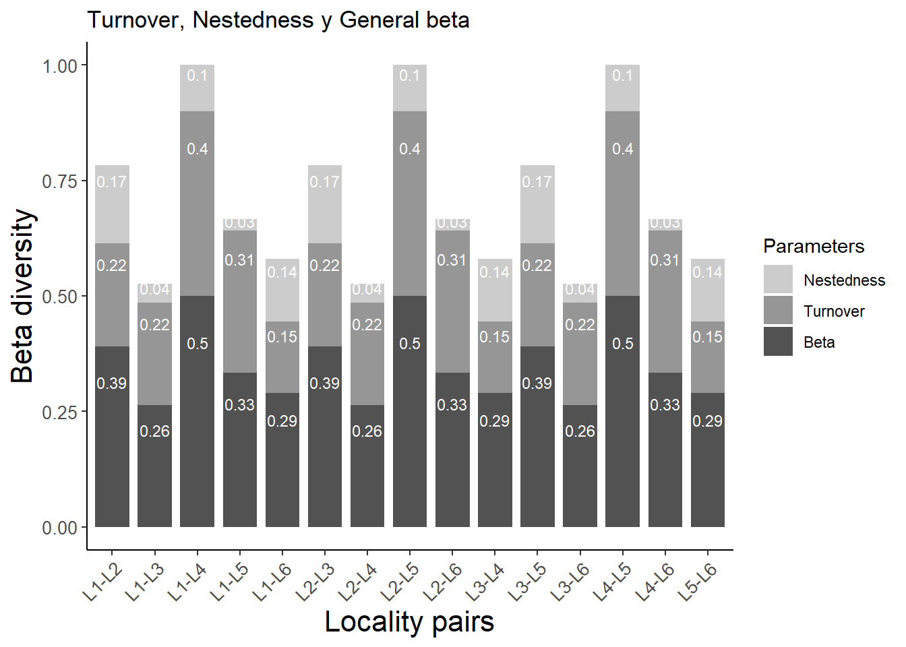
La Figure 11 muestra que el recambio es el que domina en comparación al anidamiento por diferencia de especies, principalmente entre las localidades 3 a 5. La diversidad por anidamiento fue muy baja.
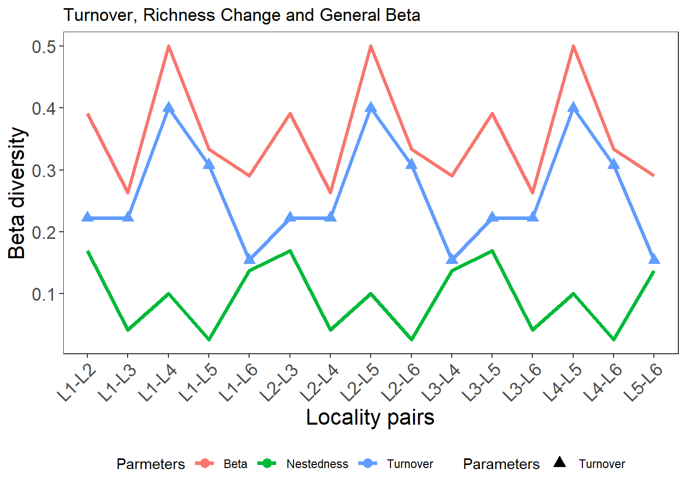
Enlaces de soporte para los cálculos de diversidad beta
Enlace Artículo en html de Baselga y Olme (2012). betapart: an R package for the study of beta diversity.
Paquete Betapar Componentes del paquete betapart, para calcular la diversidad beta en sus componentes de anidamiento y de recambio.